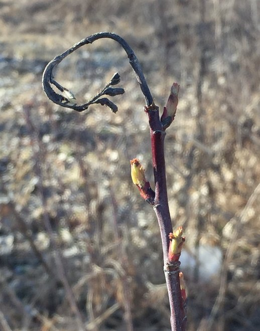
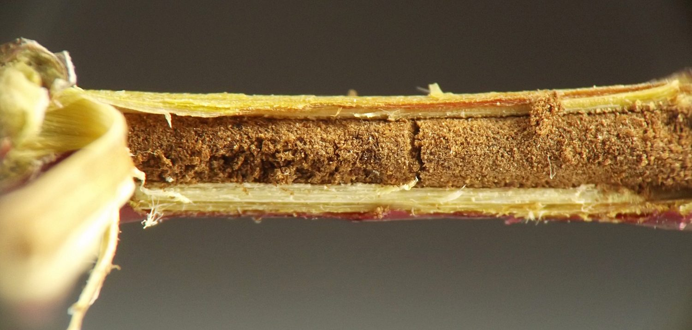
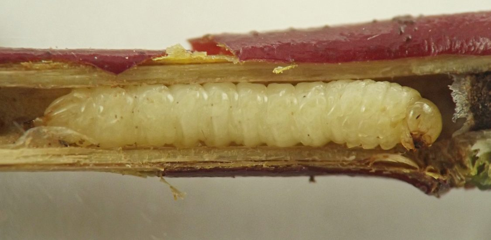
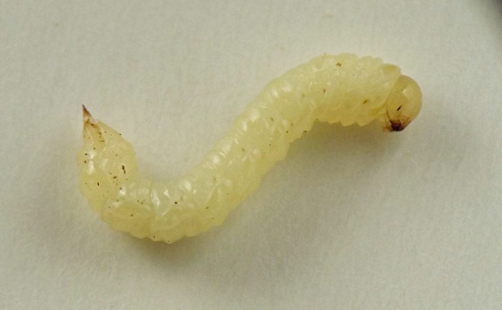
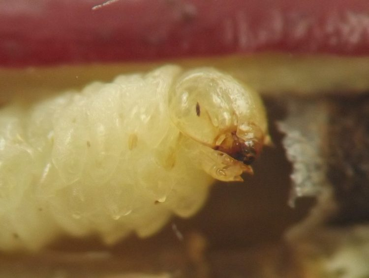
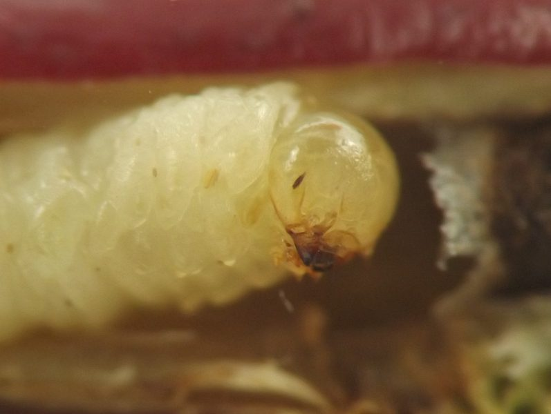
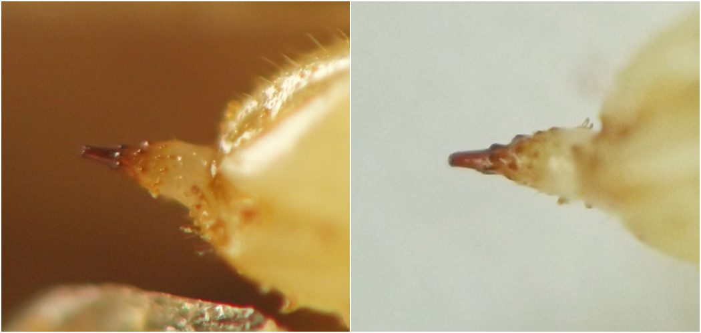

Stem borer (Hymenoptera: Cephidae) in Rosa
| Record no.: | 0669 |
|---|---|
| Feeding guild: | Stem borer |
| Taxonomy: | Hymenoptera: Cephidae: cf. Phylloecus |
| Stages observed: | trace, larva |
| Distribution observed: | IA |
| Hosts in Rosa: | undetermined R. sp. (wild rose) |
In winter I observed a dormant wild rose stem whose top had been killed during the previous growing season, causing the tip of the shoot to shrivel and wilt. The uppermost ~10cm of healthy stem below the shriveled tip broke off when I was examining the stem in the field, and this section contained a tunnel with a cephid larva inside. At the base of the broken-off section of stem, there appeared to be cryptic cynipid cells in the rather thick outer wall of the stem adjacent to the cephid larva's tunnel. The portion of the cephid's tunnel above the position of the larva and extending all the way up into the shriveled tip was tightly packed with extremely fine-grained brown frass. Along the full length of the tunnel, the larva had completely hollowed out the stem except for the outer wall.
Phylloecus trimaculata and P. cressonii have been previously recorded from stems of Rosa in North America (Champlain 1924, Middlekauff 1969).

 Prev
Prev
{kind=link}
{kind=link}

{kind=link}

{kind=link}

{kind=link}

{kind=link}

{kind=link}

- Champlain, A.B. 1924. Adirus trimaculatus Say - a rose pest. Journal of Economic Entomology 17(6): 648-650.[return to in-text citation]
- Middlekauff, W.W. 1969. The cephid stem borers of California (Hymenoptera: Cephidae). Bulletin of the California Insect Survey 2: 1-19.[return to in-text citation]
Page created: March 27, 2026. Last update: March 27, 2026